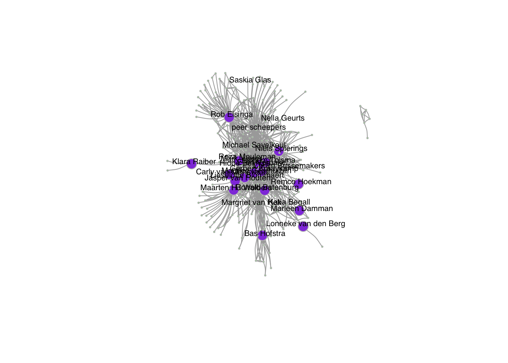

Network visualization tutorial
Anuschka Peelen
2022-09-27
1 2.1 Zachary
#install.packages("igraph")
require(igraph)
g <- make_graph("Zachary")
plot(g)
gmat <- as_adjacency_matrix(g, type = "both", sparse = FALSE)
gmat#> [,1] [,2] [,3] [,4] [,5] [,6] [,7] [,8] [,9] [,10] [,11] [,12] [,13] [,14] [,15] [,16] [,17]
#> [1,] 0 1 1 1 1 1 1 1 1 0 1 1 1 1 0 0 0
#> [2,] 1 0 1 1 0 0 0 1 0 0 0 0 0 1 0 0 0
#> [3,] 1 1 0 1 0 0 0 1 1 1 0 0 0 1 0 0 0
#> [4,] 1 1 1 0 0 0 0 1 0 0 0 0 1 1 0 0 0
#> [5,] 1 0 0 0 0 0 1 0 0 0 1 0 0 0 0 0 0
#> [6,] 1 0 0 0 0 0 1 0 0 0 1 0 0 0 0 0 1
#> [7,] 1 0 0 0 1 1 0 0 0 0 0 0 0 0 0 0 1
#> [8,] 1 1 1 1 0 0 0 0 0 0 0 0 0 0 0 0 0
#> [9,] 1 0 1 0 0 0 0 0 0 0 0 0 0 0 0 0 0
#> [10,] 0 0 1 0 0 0 0 0 0 0 0 0 0 0 0 0 0
#> [11,] 1 0 0 0 1 1 0 0 0 0 0 0 0 0 0 0 0
#> [12,] 1 0 0 0 0 0 0 0 0 0 0 0 0 0 0 0 0
#> [13,] 1 0 0 1 0 0 0 0 0 0 0 0 0 0 0 0 0
#> [14,] 1 1 1 1 0 0 0 0 0 0 0 0 0 0 0 0 0
#> [15,] 0 0 0 0 0 0 0 0 0 0 0 0 0 0 0 0 0
#> [16,] 0 0 0 0 0 0 0 0 0 0 0 0 0 0 0 0 0
#> [17,] 0 0 0 0 0 1 1 0 0 0 0 0 0 0 0 0 0
#> [18,] 1 1 0 0 0 0 0 0 0 0 0 0 0 0 0 0 0
#> [19,] 0 0 0 0 0 0 0 0 0 0 0 0 0 0 0 0 0
#> [20,] 1 1 0 0 0 0 0 0 0 0 0 0 0 0 0 0 0
#> [21,] 0 0 0 0 0 0 0 0 0 0 0 0 0 0 0 0 0
#> [22,] 1 1 0 0 0 0 0 0 0 0 0 0 0 0 0 0 0
#> [23,] 0 0 0 0 0 0 0 0 0 0 0 0 0 0 0 0 0
#> [24,] 0 0 0 0 0 0 0 0 0 0 0 0 0 0 0 0 0
#> [25,] 0 0 0 0 0 0 0 0 0 0 0 0 0 0 0 0 0
#> [26,] 0 0 0 0 0 0 0 0 0 0 0 0 0 0 0 0 0
#> [27,] 0 0 0 0 0 0 0 0 0 0 0 0 0 0 0 0 0
#> [28,] 0 0 1 0 0 0 0 0 0 0 0 0 0 0 0 0 0
#> [29,] 0 0 1 0 0 0 0 0 0 0 0 0 0 0 0 0 0
#> [30,] 0 0 0 0 0 0 0 0 0 0 0 0 0 0 0 0 0
#> [31,] 0 1 0 0 0 0 0 0 1 0 0 0 0 0 0 0 0
#> [32,] 1 0 0 0 0 0 0 0 0 0 0 0 0 0 0 0 0
#> [33,] 0 0 1 0 0 0 0 0 1 0 0 0 0 0 1 1 0
#> [34,] 0 0 0 0 0 0 0 0 1 1 0 0 0 1 1 1 0
#> [,18] [,19] [,20] [,21] [,22] [,23] [,24] [,25] [,26] [,27] [,28] [,29] [,30] [,31] [,32]
#> [1,] 1 0 1 0 1 0 0 0 0 0 0 0 0 0 1
#> [2,] 1 0 1 0 1 0 0 0 0 0 0 0 0 1 0
#> [3,] 0 0 0 0 0 0 0 0 0 0 1 1 0 0 0
#> [4,] 0 0 0 0 0 0 0 0 0 0 0 0 0 0 0
#> [5,] 0 0 0 0 0 0 0 0 0 0 0 0 0 0 0
#> [6,] 0 0 0 0 0 0 0 0 0 0 0 0 0 0 0
#> [7,] 0 0 0 0 0 0 0 0 0 0 0 0 0 0 0
#> [8,] 0 0 0 0 0 0 0 0 0 0 0 0 0 0 0
#> [9,] 0 0 0 0 0 0 0 0 0 0 0 0 0 1 0
#> [10,] 0 0 0 0 0 0 0 0 0 0 0 0 0 0 0
#> [11,] 0 0 0 0 0 0 0 0 0 0 0 0 0 0 0
#> [12,] 0 0 0 0 0 0 0 0 0 0 0 0 0 0 0
#> [13,] 0 0 0 0 0 0 0 0 0 0 0 0 0 0 0
#> [14,] 0 0 0 0 0 0 0 0 0 0 0 0 0 0 0
#> [15,] 0 0 0 0 0 0 0 0 0 0 0 0 0 0 0
#> [16,] 0 0 0 0 0 0 0 0 0 0 0 0 0 0 0
#> [17,] 0 0 0 0 0 0 0 0 0 0 0 0 0 0 0
#> [18,] 0 0 0 0 0 0 0 0 0 0 0 0 0 0 0
#> [19,] 0 0 0 0 0 0 0 0 0 0 0 0 0 0 0
#> [20,] 0 0 0 0 0 0 0 0 0 0 0 0 0 0 0
#> [21,] 0 0 0 0 0 0 0 0 0 0 0 0 0 0 0
#> [22,] 0 0 0 0 0 0 0 0 0 0 0 0 0 0 0
#> [23,] 0 0 0 0 0 0 0 0 0 0 0 0 0 0 0
#> [24,] 0 0 0 0 0 0 0 0 1 0 1 0 1 0 0
#> [25,] 0 0 0 0 0 0 0 0 1 0 1 0 0 0 1
#> [26,] 0 0 0 0 0 0 1 1 0 0 0 0 0 0 1
#> [27,] 0 0 0 0 0 0 0 0 0 0 0 0 1 0 0
#> [28,] 0 0 0 0 0 0 1 1 0 0 0 0 0 0 0
#> [29,] 0 0 0 0 0 0 0 0 0 0 0 0 0 0 1
#> [30,] 0 0 0 0 0 0 1 0 0 1 0 0 0 0 0
#> [31,] 0 0 0 0 0 0 0 0 0 0 0 0 0 0 0
#> [32,] 0 0 0 0 0 0 0 1 1 0 0 1 0 0 0
#> [33,] 0 1 0 1 0 1 1 0 0 0 0 0 1 1 1
#> [34,] 0 1 1 1 0 1 1 0 0 1 1 1 1 1 1
#> [,33] [,34]
#> [1,] 0 0
#> [2,] 0 0
#> [3,] 1 0
#> [4,] 0 0
#> [5,] 0 0
#> [6,] 0 0
#> [7,] 0 0
#> [8,] 0 0
#> [9,] 1 1
#> [10,] 0 1
#> [11,] 0 0
#> [12,] 0 0
#> [13,] 0 0
#> [14,] 0 1
#> [15,] 1 1
#> [16,] 1 1
#> [17,] 0 0
#> [18,] 0 0
#> [19,] 1 1
#> [20,] 0 1
#> [21,] 1 1
#> [22,] 0 0
#> [23,] 1 1
#> [24,] 1 1
#> [25,] 0 0
#> [26,] 0 0
#> [27,] 0 1
#> [28,] 0 1
#> [29,] 0 1
#> [30,] 1 1
#> [31,] 1 1
#> [32,] 1 1
#> [33,] 0 1
#> [34,] 1 0hist(table(degree(g)), xlab='indegree', main= 'Histogram of indegree')
(34*33)/2#> [1] 561483+483+78#> [1] 1044igraph::triad.census(g)#> [1] 3971 0 1575 0 0 0 0 0 0 0 393 0 0 0 0 45# I will use sna because it shows the names of the triads as well.
#sna::triad.census(gmat)(34*33*32)/3#> [1] 11968# changing V
V(g)$size = degree(g, normalized = T) * 60 + 10 #after some trial and error
plot(g, mode = "undirected")
# changing V
V(g)$size = degree(g) *2 #after some trial and error
plot(g, mode = "undirected")
# load the necessary datasets
getwd()#> [1] "/Users/anuschka/Documents/labjournal"load("./data/soc_df.RData")
load("./data/soc_collabs1.RData")
load("./data/soc_collabs2.RData")#setwd("/Users/anuschka/Documents/labjournal")2 2.2 Network visualization tutorial
# get unique collaborators of soc staff first. In the soc_collabs data there are 400 entries. However, some of them are listed twice. You want to take those out. The [,4] means that the fourth column is used to get the unique cases (those are the coauthor ids)
sc_unique <- unique(soc_collabs[, 4]) # so 229 unique collaborators for RU staff?sc_unique <- c(sc_unique, soc_df$gs_id) # add the soc staff themselves.
#Here you add the gs_id (google scholar ids) from the dataset soc_df to the newly created data (sc_unique)sc_unique <- data.frame(sc_unique)
#Now it is saved as a vector but we want it more neatly in a dataframe. Probably you could combine all the code used above with row bind sc_unique$v1 <- 1 # convenient to select on after the merge.
#Here you create variable v1 with value 1sc_unique <- unique(sc_unique)
#Here you again take out duplicate elements# so this is a very important step, we join the unique soc collaborators to the collaborators of
# collaborators
#onefivedegree is the new dataset of the 1.5 degree network. You then join the co-authors of the unique # collaborators together into this onefivedegree
require(tidyverse)
onefivedegree <- left_join(collabs_1deep, sc_unique, by = c(coauth_id = "sc_unique"))# Then, we drop those that are not among sociology collaborators and who don't lsit coauthors
# regardless
#is.na means missing (not available).
onefivedegree <- onefivedegree[!is.na(onefivedegree$v1), ]
onefivedegree <- onefivedegree[!is.na(onefivedegree$coauth), ]# we pick those columns and have an edgelist of soc collaborators and whether they collaborate with
# those same collaborators the 1.5 degree network. Here you only save the names and the names of their #coauthors (and you change those names so that you see how the relation works). In this edgelist you cant see that much yet (only a tie between dyads(?))
onefivedegree <- onefivedegree[, c("name", "coauth")]
names(onefivedegree) <- c("from", "to")# we get soc collaborators and add those to the data above and end up with a nice edgelist! So you first take out the missings and save the name and coauthors from the soc_collabs file. Then you change those names to from and to as well and then you bind these in the rows of onefivedegree.
socc <- soc_collabs[!is.na(soc_collabs$coauth), ]
socc <- socc[, c("name", "coauth")]
names(socc) <- c("from", "to")
onefivedegree <- rbind(socc, onefivedegree)save(onefivedegree, file = "./data/soc_onefivedegree.RData")onefivedegree <- as.matrix(onefivedegree) # matrix because igraph wants that
library(igraph) # Notice that we call igraph here, in anticipation of the viz tutorial.
net1 <- graph_from_edgelist(onefivedegree, directed = TRUE) # Notice the igraph function here!plot(net1) # pretty ugly!
plot(net1 ,
vertex.color = "gold", # nice color for the vertices
vertex.size = 4, # we'll make vertices a bit smaller
vertex.frame.color = "gray", # we'll put a gray frame around vertices
vertex.label.color = "black", # not that ugly blue color for the labels (names)
vertex.label.family = "Helvetica", # not a fan of times new roman in figures
vertex.label.cex = 0.4, # make the label a bit smaller too
vertex.label.dist = 0.5, # we'll pull the labels a bit away from the vertices
edge.curved = 0.2, # curved edges is always a nice touch
edge.arrow.size = 0.1) # make arrow size (direction of edge) smaller
#I think that with this piece of code it transforms the data of the vertices that are now stored in net1 (where the graphs are based on) into normal vectors (that what ad_ids does. But im not totally sure what they are right now. Innetwork now has all the names.
in_network <- data.frame(as_ids(V(net1)))
names(in_network)[1] <- "name"
#soc_df$total_cites <- soc_df$total_cites.x
#With the first line of code, it saves names and total cites from the soc_df data into ru_nodes. Then the in_network and ru_nodes are merged based on the name. We can see that cities scores a lot of missings because I believe we only know the cites of the researchers at the RU. All the others score an NA. The final line of code uses an if-statement. If there is a missing on total_cites, those individuals get the E69F00 (then the condition is true), if the condition is false (and people dont have a missing) they get the score 56B4E9. The first code is a kind of orange color and the second a blue one. Thus, you can use this to give different colors to people based on the total cites.
ru_nodes <- soc_df[, c("name", "total_cites")]
in_network <- left_join(in_network, ru_nodes, by = c("name" = "name"))
in_network$vcol <- ifelse(is.na(in_network$total_cites), "#E69F00", "#56B4E9")
#Now in the plot, the color bases on the newly created variable.
plot(net1,
vertex.color = in_network$vcol, #THIS WAS WHAT WE DID THE LAST CODEBLOCK FOR!
vertex.size = 4, # we'll make them a bit smaller
vertex.frame.color = "gray", # we'll put a frame around it
vertex.label.color = "black", # not that ugly blue color for the names
vertex.label.family = "Helvetica", # not a fan of times in figures
vertex.label.cex = 0.4, # a bit smaller too
vertex.label.dist = 0.5, # we'll pull the labels a bit away from the vertices
edge.curved = 0.2, # curved edges is always a nice tough
edge.arrow.size = 0.1) # arrow size smaller#If there is a missing on total cites, then you dont want a label
plot(net1,
vertex.color = in_network$vcol,
#NOTICE THESE CONDITIONAL STATEMENTS BELOW
vertex.label = ifelse(!is.na(in_network$total_cites), in_network$name, NA),
vertex.size = 4, # we'll make them a bit smaller
vertex.frame.color = "gray", # we'll put a frame around it
vertex.label.color = "black", # not that ugly blue color for the names
vertex.label.family = "Helvetica", # not a fan of times in figures
vertex.label.cex = 0.65, # a bit smaller too
vertex.label.dist = 0.5, # we'll pull the labels a bit away from the vertices
edge.curved = 0.2, # curved edges is always a nice tough
edge.arrow.size = 0.1) # arrow size smaller
#If there is a missing on total_cites, the size of the vertex increases with log(2) (thus x0.3). But why do you use log and not just *0.3 e.g.?
plot(net1,
vertex.color = in_network$vcol,
vertex.label = ifelse(!is.na(in_network$total_cites), in_network$name, NA),
# SAME HERE, TRY TO SMOOTH THE TOTAL_CITES A BIT WITH LOGSCALE
vertex.size = ifelse(!is.na(in_network$total_cites), log(in_network$total_cites), 2),
vertex.frame.color = "gray", # we'll put a frame around it
vertex.label.color = "black", # not that ugly blue color for the names
vertex.label.family = "Helvetica", # not a fan of times in figures
vertex.label.cex = 0.65, # a bit smaller too
vertex.label.dist = 0.5, # we'll pull the labels a bit away from the vertices
edge.curved = 0.2, # curved edges is always a nice tough
edge.arrow.size = 0.1) # arrow size smaller
3 2.3 End of tutorial, improve the plot myself
#In line with my research topic for this course, I would like to make visible who of the researchers has a homepage (more active online?) and who does not. In soc_df you have the variable homepage.
ru_page <- soc_df[, c("name", "homepage")]
in_network <- left_join(in_network, ru_page, by = c("name" = "name"))
in_network$vcolp <- ifelse(is.na(in_network$homepage), "#94E58C", "#B88CE5")
#If people have a website, they are purple and if they dont they are green. Furthermore, I still dont want labels for the non-RU researchers.
plot(net1,
vertex.color = in_network$vcolp,
#NOTICE THESE CONDITIONAL STATEMENTS BELOW
vertex.label = ifelse(!is.na(in_network$total_cites), in_network$name, NA),
vertex.size = 4, # we'll make them a bit smaller
vertex.frame.color = "gray", # we'll put a frame around it
vertex.label.color = "black", # not that ugly blue color for the names
vertex.label.family = "Helvetica", # not a fan of times in figures
vertex.label.cex = 0.65, # a bit smaller too
vertex.label.dist = 0.5, # we'll pull the labels a bit away from the vertices
edge.curved = 0.2, # curved edges is always a nice tough
edge.arrow.size = 0.1) # arrow size smaller#The purple color is not clearly visible because the edges are grey (but I do want to keep the grey color).
in_network$vcolp <- ifelse(is.na(in_network$homepage), "#94E58C", "#9145DE")#I want the people with a webpage to appear larger in the plot. However, it's a string variable so first I have to make it numeric
in_network$vcolps <- ifelse(is.na(in_network$homepage), "1", "2")
in_network$vpagn <- as.numeric (in_network$vcolps)
#Now the researchers with a webpage have a larger vertex size.
plot(net1,
vertex.color = in_network$vcolp,
vertex.label = ifelse(!is.na(in_network$total_cites), in_network$name, NA),
vertex.size = ifelse(!is.na(in_network$homepage), in_network$vpagn*5, in_network$vpagn*1.5),
vertex.frame.color = "gray", # we'll put a frame around it
vertex.label.color = "black", # not that ugly blue color for the names
vertex.label.family = "Helvetica", # not a fan of times in figures
vertex.label.cex = 0.65, # a bit smaller too
vertex.label.dist = 0.5, # we'll pull the labels a bit away from the vertices
edge.curved = 0.2, # curved edges is always a nice tough
edge.arrow.size = 0.01) # arrow size smaller
#I would like something extra to the plot, namely a different color for men than for women.
ru_page <- soc_df[, c("name", "gender")]
in_network <- left_join(in_network, ru_page, by = c("name" = "name"))
#The table shows that there are 14 men and 13 women, and of course that most people have a missing. Gender information is not coded for the data of the coauthors so i can only do it for these people.
table(in_network$gender, useNA="always")#>
#> man woman <NA>
#> 14 13 209#Im not sure why, but the color codes all of a sudden gave errors (while they worked above). I dont manage to give the missings on gender a different color because i either get the output that the missings have a color and men/women still have a numeric score, or the men are blue, the women magenta but then the missings return to NA. Idk how to combine it all in one code.
in_network$gendern <- as.integer(as.factor(in_network$gender))
in_network$gendercol <-ifelse(is.na(in_network$gendern),"gray", in_network$gendern)
in_network$gendercol <-ifelse(in_network$gendern==1,"blue","magenta")
#My final plot has a different color for men than for women and the researchers with a homepage have a larger vertex size.
plot(net1,
vertex.color = in_network$gendercol,
vertex.label = ifelse(!is.na(in_network$total_cites), in_network$name, NA),
vertex.size = ifelse(!is.na(in_network$homepage), in_network$vpagn*5, in_network$vpagn*1.5),
vertex.frame.color = "gray", # we'll put a frame around it
vertex.label.color = "black", # not that ugly blue color for the names
vertex.label.family = "Helvetica", # not a fan of times in figures
vertex.label.cex = 0.65, # a bit smaller too
vertex.label.dist = 0.5, # we'll pull the labels a bit away from the vertices
edge.curved = 0.2, # curved edges is always a nice tough
edge.arrow.size = 0.01) # arrow size smaller
LS0tCnRpdGxlOiAiTmV0d29yayB2aXN1YWxpemF0aW9uIHR1dG9yaWFsIgphdXRob3I6ICJBbnVzY2hrYSBQZWVsZW4iCmRhdGU6ICJgciBTeXMuRGF0ZSgpYCIKb3V0cHV0OiBodG1sX2RvY3VtZW50Ci0tLQoKYGBge3IsIGdsb2JhbHNldHRpbmdzLCBlY2hvPUZBTFNFLCB3YXJuaW5nPUZBTFNFLCByZXN1bHRzPSdoaWRlJ30KbGlicmFyeShrbml0cikKCmtuaXRyOjpvcHRzX2NodW5rJHNldChlY2hvID0gVFJVRSkKb3B0c19jaHVuayRzZXQodGlkeS5vcHRzPWxpc3Qod2lkdGguY3V0b2ZmPTEwMCksdGlkeT1UUlVFLCB3YXJuaW5nID0gRkFMU0UsIG1lc3NhZ2UgPSBGQUxTRSxjb21tZW50ID0gIiM+IiwgY2FjaGU9VFJVRSwgY2xhc3Muc291cmNlPWMoInRlc3QiKSwgY2xhc3Mub3V0cHV0PWMoInRlc3QyIikpCm9wdGlvbnMod2lkdGggPSAxMDApCnJnbDo6c2V0dXBLbml0cigpCgoKCmNvbG9yaXplIDwtIGZ1bmN0aW9uKHgsIGNvbG9yKSB7c3ByaW50ZigiPHNwYW4gc3R5bGU9J2NvbG9yOiAlczsnPiVzPC9zcGFuPiIsIGNvbG9yLCB4KSB9CgpgYGAKCiMgMi4xIFphY2hhcnkKCmBgYHtyfQojaW5zdGFsbC5wYWNrYWdlcygiaWdyYXBoIikKCnJlcXVpcmUoaWdyYXBoKQpnIDwtIG1ha2VfZ3JhcGgoIlphY2hhcnkiKQpwbG90KGcpCmBgYAoKYGBge3J9CmdtYXQgPC0gYXNfYWRqYWNlbmN5X21hdHJpeChnLCB0eXBlID0gImJvdGgiLCBzcGFyc2UgPSBGQUxTRSkKZ21hdApgYGAKCmBgYHtyfQpoaXN0KHRhYmxlKGRlZ3JlZShnKSksIHhsYWI9J2luZGVncmVlJywgbWFpbj0gJ0hpc3RvZ3JhbSBvZiBpbmRlZ3JlZScpCmBgYAoKYGBge3J9CigzNCozMykvMgoKNDgzKzQ4Mys3OApgYGAKCmBgYHtyfQppZ3JhcGg6OnRyaWFkLmNlbnN1cyhnKQojIEkgd2lsbCB1c2Ugc25hIGJlY2F1c2UgaXQgc2hvd3MgdGhlIG5hbWVzIG9mIHRoZSB0cmlhZHMgYXMgd2VsbC4KI3NuYTo6dHJpYWQuY2Vuc3VzKGdtYXQpCmBgYAoKYGBge3J9CigzNCozMyozMikvMwoKYGBgCgpgYGB7cn0KIyBjaGFuZ2luZyBWClYoZykkc2l6ZSA9IGRlZ3JlZShnLCBub3JtYWxpemVkID0gVCkgKiA2MCArIDEwICAjYWZ0ZXIgc29tZSB0cmlhbCBhbmQgZXJyb3IKcGxvdChnLCBtb2RlID0gInVuZGlyZWN0ZWQiKQpgYGAKCmBgYHtyfQojIGNoYW5naW5nIFYKVihnKSRzaXplID0gZGVncmVlKGcpICoyICAjYWZ0ZXIgc29tZSB0cmlhbCBhbmQgZXJyb3IKcGxvdChnLCBtb2RlID0gInVuZGlyZWN0ZWQiKQpgYGAKCjwhLS0tSm9jaGVtOiBJIGNoYW5nZWQgeW91ciBkaXJlY3RvcmllcywgeW91IG1heSBuZWVkIHRvIGNoYW5nZSB0aGlzIGJhY2suLS0tPgoKYGBge3J9CiMgbG9hZCB0aGUgbmVjZXNzYXJ5IGRhdGFzZXRzCmdldHdkKCkKbG9hZCgiLi9kYXRhL3NvY19kZi5SRGF0YSIpCmxvYWQoIi4vZGF0YS9zb2NfY29sbGFiczEuUkRhdGEiKQpsb2FkKCIuL2RhdGEvc29jX2NvbGxhYnMyLlJEYXRhIikKYGBgCgo8IS0tLUpvY2hlbTogc2V0dGluZyB3b3JraW5nIGRpcmVjdG9yaWVzIGluIGNvZGUgY2h1bmtzIGRvZXMgbm90IHdvcmsuLS0tPgoKYGBge3IsIGV2YWw9RkFMU0V9CiNzZXR3ZCgiL1VzZXJzL2FudXNjaGthL0RvY3VtZW50cy9sYWJqb3VybmFsIikKYGBgCgojIDIuMiBOZXR3b3JrIHZpc3VhbGl6YXRpb24gdHV0b3JpYWwKCmBgYHtyfQojIGdldCB1bmlxdWUgY29sbGFib3JhdG9ycyBvZiBzb2Mgc3RhZmYgZmlyc3QuIEluIHRoZSBzb2NfY29sbGFicyBkYXRhIHRoZXJlIGFyZSA0MDAgZW50cmllcy4gSG93ZXZlciwgc29tZSBvZiB0aGVtIGFyZSBsaXN0ZWQgdHdpY2UuIFlvdSB3YW50IHRvIHRha2UgdGhvc2Ugb3V0LiBUaGUgWyw0XSBtZWFucyB0aGF0IHRoZSBmb3VydGggY29sdW1uIGlzIHVzZWQgdG8gZ2V0IHRoZSB1bmlxdWUgY2FzZXMgKHRob3NlIGFyZSB0aGUgY29hdXRob3IgaWRzKQpzY191bmlxdWUgPC0gdW5pcXVlKHNvY19jb2xsYWJzWywgNF0pICAjIHNvIDIyOSB1bmlxdWUgY29sbGFib3JhdG9ycyBmb3IgUlUgc3RhZmY/CmBgYAoKYGBge3J9CnNjX3VuaXF1ZSA8LSBjKHNjX3VuaXF1ZSwgc29jX2RmJGdzX2lkKSAgIyBhZGQgdGhlIHNvYyBzdGFmZiB0aGVtc2VsdmVzLgojSGVyZSB5b3UgYWRkIHRoZSBnc19pZCAoZ29vZ2xlIHNjaG9sYXIgaWRzKSBmcm9tIHRoZSBkYXRhc2V0IHNvY19kZiB0byB0aGUgbmV3bHkgY3JlYXRlZCBkYXRhIChzY191bmlxdWUpCmBgYAoKYGBge3J9CnNjX3VuaXF1ZSA8LSBkYXRhLmZyYW1lKHNjX3VuaXF1ZSkKI05vdyBpdCBpcyBzYXZlZCBhcyBhIHZlY3RvciBidXQgd2Ugd2FudCBpdCBtb3JlIG5lYXRseSBpbiBhIGRhdGFmcmFtZS4gUHJvYmFibHkgeW91IGNvdWxkIGNvbWJpbmUgYWxsIHRoZSBjb2RlIHVzZWQgYWJvdmUgd2l0aCByb3cgYmluZCAKYGBgCgpgYGB7cn0Kc2NfdW5pcXVlJHYxIDwtIDEgICMgY29udmVuaWVudCB0byBzZWxlY3Qgb24gYWZ0ZXIgdGhlIG1lcmdlLgojSGVyZSB5b3UgY3JlYXRlIHZhcmlhYmxlIHYxIHdpdGggdmFsdWUgMQpgYGAKCmBgYHtyfQpzY191bmlxdWUgPC0gdW5pcXVlKHNjX3VuaXF1ZSkKI0hlcmUgeW91IGFnYWluIHRha2Ugb3V0IGR1cGxpY2F0ZSBlbGVtZW50cwpgYGAKCmBgYHtyfQojIHNvIHRoaXMgaXMgYSB2ZXJ5IGltcG9ydGFudCBzdGVwLCB3ZSBqb2luIHRoZSB1bmlxdWUgc29jIGNvbGxhYm9yYXRvcnMgdG8gdGhlIGNvbGxhYm9yYXRvcnMgb2YKIyBjb2xsYWJvcmF0b3JzCiNvbmVmaXZlZGVncmVlIGlzIHRoZSBuZXcgZGF0YXNldCBvZiB0aGUgMS41IGRlZ3JlZSBuZXR3b3JrLiBZb3UgdGhlbiBqb2luIHRoZSBjby1hdXRob3JzIG9mIHRoZSB1bmlxdWUgIyBjb2xsYWJvcmF0b3JzIHRvZ2V0aGVyIGludG8gdGhpcyBvbmVmaXZlZGVncmVlCnJlcXVpcmUodGlkeXZlcnNlKQpvbmVmaXZlZGVncmVlIDwtIGxlZnRfam9pbihjb2xsYWJzXzFkZWVwLCBzY191bmlxdWUsIGJ5ID0gYyhjb2F1dGhfaWQgPSAic2NfdW5pcXVlIikpCmBgYAoKYGBge3J9CiMgVGhlbiwgd2UgZHJvcCB0aG9zZSB0aGF0IGFyZSBub3QgYW1vbmcgc29jaW9sb2d5IGNvbGxhYm9yYXRvcnMgYW5kIHdobyBkb24ndCBsc2l0IGNvYXV0aG9ycwojIHJlZ2FyZGxlc3MKI2lzLm5hIG1lYW5zIG1pc3NpbmcgKG5vdCBhdmFpbGFibGUpLiAKb25lZml2ZWRlZ3JlZSA8LSBvbmVmaXZlZGVncmVlWyFpcy5uYShvbmVmaXZlZGVncmVlJHYxKSwgXQpvbmVmaXZlZGVncmVlIDwtIG9uZWZpdmVkZWdyZWVbIWlzLm5hKG9uZWZpdmVkZWdyZWUkY29hdXRoKSwgXQpgYGAKCmBgYHtyfQojIHdlIHBpY2sgdGhvc2UgY29sdW1ucyBhbmQgaGF2ZSBhbiBlZGdlbGlzdCBvZiBzb2MgY29sbGFib3JhdG9ycyBhbmQgd2hldGhlciB0aGV5IGNvbGxhYm9yYXRlIHdpdGgKIyB0aG9zZSBzYW1lIGNvbGxhYm9yYXRvcnMgdGhlIDEuNSBkZWdyZWUgbmV0d29yay4gSGVyZSB5b3Ugb25seSBzYXZlIHRoZSBuYW1lcyBhbmQgdGhlIG5hbWVzIG9mIHRoZWlyICNjb2F1dGhvcnMgKGFuZCB5b3UgY2hhbmdlIHRob3NlIG5hbWVzIHNvIHRoYXQgeW91IHNlZSBob3cgdGhlIHJlbGF0aW9uIHdvcmtzKS4gSW4gdGhpcyBlZGdlbGlzdCB5b3UgY2FudCBzZWUgdGhhdCBtdWNoIHlldCAob25seSBhIHRpZSBiZXR3ZWVuIGR5YWRzKD8pKQpvbmVmaXZlZGVncmVlIDwtIG9uZWZpdmVkZWdyZWVbLCBjKCJuYW1lIiwgImNvYXV0aCIpXQpuYW1lcyhvbmVmaXZlZGVncmVlKSA8LSBjKCJmcm9tIiwgInRvIikKYGBgCgpgYGB7cn0KIyB3ZSBnZXQgc29jIGNvbGxhYm9yYXRvcnMgYW5kIGFkZCB0aG9zZSB0byB0aGUgZGF0YSBhYm92ZSBhbmQgZW5kIHVwIHdpdGggYSBuaWNlIGVkZ2VsaXN0ISBTbyB5b3UgZmlyc3QgdGFrZSBvdXQgdGhlIG1pc3NpbmdzIGFuZCBzYXZlIHRoZSBuYW1lIGFuZCBjb2F1dGhvcnMgZnJvbSB0aGUgc29jX2NvbGxhYnMgZmlsZS4gVGhlbiB5b3UgY2hhbmdlIHRob3NlIG5hbWVzIHRvIGZyb20gYW5kIHRvIGFzIHdlbGwgYW5kIHRoZW4geW91IGJpbmQgdGhlc2UgaW4gdGhlIHJvd3Mgb2Ygb25lZml2ZWRlZ3JlZS4gCnNvY2MgPC0gc29jX2NvbGxhYnNbIWlzLm5hKHNvY19jb2xsYWJzJGNvYXV0aCksIF0Kc29jYyA8LSBzb2NjWywgYygibmFtZSIsICJjb2F1dGgiKV0KbmFtZXMoc29jYykgPC0gYygiZnJvbSIsICJ0byIpCm9uZWZpdmVkZWdyZWUgPC0gcmJpbmQoc29jYywgb25lZml2ZWRlZ3JlZSkKYGBgCgpgYGB7cn0Kc2F2ZShvbmVmaXZlZGVncmVlLCBmaWxlID0gIi4vZGF0YS9zb2Nfb25lZml2ZWRlZ3JlZS5SRGF0YSIpCmBgYAoKYGBge3J9Cm9uZWZpdmVkZWdyZWUgPC0gYXMubWF0cml4KG9uZWZpdmVkZWdyZWUpICAjIG1hdHJpeCBiZWNhdXNlIGlncmFwaCB3YW50cyB0aGF0CmxpYnJhcnkoaWdyYXBoKSAgIyBOb3RpY2UgdGhhdCB3ZSBjYWxsIGlncmFwaCBoZXJlLCBpbiBhbnRpY2lwYXRpb24gb2YgdGhlIHZpeiB0dXRvcmlhbC4KbmV0MSA8LSBncmFwaF9mcm9tX2VkZ2VsaXN0KG9uZWZpdmVkZWdyZWUsIGRpcmVjdGVkID0gVFJVRSkgICMgTm90aWNlIHRoZSBpZ3JhcGggZnVuY3Rpb24gaGVyZSEKYGBgCgpgYGB7cn0KcGxvdChuZXQxKSAgIyBwcmV0dHkgdWdseSEKYGBgCgpgYGB7cn0KcGxvdChuZXQxICwKICAgICB2ZXJ0ZXguY29sb3IgPSAiZ29sZCIsICMgbmljZSBjb2xvciBmb3IgdGhlIHZlcnRpY2VzCiAgICAgdmVydGV4LnNpemUgPSA0LCAgIyB3ZSdsbCBtYWtlIHZlcnRpY2VzIGEgYml0IHNtYWxsZXIKICAgICB2ZXJ0ZXguZnJhbWUuY29sb3IgPSAiZ3JheSIsICAjIHdlJ2xsIHB1dCBhIGdyYXkgZnJhbWUgYXJvdW5kIHZlcnRpY2VzCiAgICAgdmVydGV4LmxhYmVsLmNvbG9yID0gImJsYWNrIiwgICMgbm90IHRoYXQgdWdseSBibHVlIGNvbG9yIGZvciB0aGUgbGFiZWxzIChuYW1lcykKICAgICB2ZXJ0ZXgubGFiZWwuZmFtaWx5ID0gIkhlbHZldGljYSIsICMgbm90IGEgZmFuIG9mIHRpbWVzIG5ldyByb21hbiBpbiBmaWd1cmVzCiAgICAgdmVydGV4LmxhYmVsLmNleCA9IDAuNCwgICMgbWFrZSB0aGUgbGFiZWwgYSBiaXQgc21hbGxlciB0b28KICAgICB2ZXJ0ZXgubGFiZWwuZGlzdCA9IDAuNSwgICMgd2UnbGwgcHVsbCB0aGUgbGFiZWxzIGEgYml0IGF3YXkgZnJvbSB0aGUgdmVydGljZXMKICAgICBlZGdlLmN1cnZlZCA9IDAuMiwgIyBjdXJ2ZWQgZWRnZXMgaXMgYWx3YXlzIGEgbmljZSB0b3VjaAogICAgIGVkZ2UuYXJyb3cuc2l6ZSA9IDAuMSkgIyBtYWtlIGFycm93IHNpemUgKGRpcmVjdGlvbiBvZiBlZGdlKSBzbWFsbGVyCmBgYAoKYGBge3J9CiNJIHRoaW5rIHRoYXQgd2l0aCB0aGlzIHBpZWNlIG9mIGNvZGUgaXQgdHJhbnNmb3JtcyB0aGUgZGF0YSBvZiB0aGUgdmVydGljZXMgdGhhdCBhcmUgbm93IHN0b3JlZCBpbiBuZXQxICh3aGVyZSB0aGUgZ3JhcGhzIGFyZSBiYXNlZCBvbikgaW50byBub3JtYWwgdmVjdG9ycyAodGhhdCB3aGF0IGFkX2lkcyBkb2VzLiBCdXQgaW0gbm90IHRvdGFsbHkgc3VyZSB3aGF0IHRoZXkgYXJlIHJpZ2h0IG5vdy4gSW5uZXR3b3JrIG5vdyBoYXMgYWxsIHRoZSBuYW1lcy4KaW5fbmV0d29yayA8LSBkYXRhLmZyYW1lKGFzX2lkcyhWKG5ldDEpKSkKbmFtZXMoaW5fbmV0d29yaylbMV0gPC0gIm5hbWUiCgojc29jX2RmJHRvdGFsX2NpdGVzIDwtIHNvY19kZiR0b3RhbF9jaXRlcy54CiNXaXRoIHRoZSBmaXJzdCBsaW5lIG9mIGNvZGUsIGl0IHNhdmVzIG5hbWVzIGFuZCB0b3RhbCBjaXRlcyBmcm9tIHRoZSBzb2NfZGYgZGF0YSBpbnRvIHJ1X25vZGVzLiBUaGVuIHRoZSBpbl9uZXR3b3JrIGFuZCBydV9ub2RlcyBhcmUgbWVyZ2VkIGJhc2VkIG9uIHRoZSBuYW1lLiBXZSBjYW4gc2VlIHRoYXQgY2l0aWVzIHNjb3JlcyBhIGxvdCBvZiBtaXNzaW5ncyBiZWNhdXNlIEkgYmVsaWV2ZSB3ZSBvbmx5IGtub3cgdGhlIGNpdGVzIG9mIHRoZSByZXNlYXJjaGVycyBhdCB0aGUgUlUuIEFsbCB0aGUgb3RoZXJzIHNjb3JlIGFuIE5BLiBUaGUgZmluYWwgbGluZSBvZiBjb2RlIHVzZXMgYW4gaWYtc3RhdGVtZW50LiBJZiB0aGVyZSBpcyBhIG1pc3Npbmcgb24gdG90YWxfY2l0ZXMsIHRob3NlIGluZGl2aWR1YWxzIGdldCB0aGUgRTY5RjAwICh0aGVuIHRoZSBjb25kaXRpb24gaXMgdHJ1ZSksIGlmIHRoZSBjb25kaXRpb24gaXMgZmFsc2UgKGFuZCBwZW9wbGUgZG9udCBoYXZlIGEgbWlzc2luZykgdGhleSBnZXQgdGhlIHNjb3JlIDU2QjRFOS4gVGhlIGZpcnN0IGNvZGUgaXMgYSBraW5kIG9mIG9yYW5nZSBjb2xvciBhbmQgdGhlIHNlY29uZCBhIGJsdWUgb25lLiBUaHVzLCB5b3UgY2FuIHVzZSB0aGlzIHRvIGdpdmUgZGlmZmVyZW50IGNvbG9ycyB0byBwZW9wbGUgYmFzZWQgb24gdGhlIHRvdGFsIGNpdGVzLiAKcnVfbm9kZXMgPC0gc29jX2RmWywgYygibmFtZSIsICJ0b3RhbF9jaXRlcyIpXQppbl9uZXR3b3JrIDwtIGxlZnRfam9pbihpbl9uZXR3b3JrLCBydV9ub2RlcywgYnkgPSBjKCJuYW1lIiA9ICJuYW1lIikpCmluX25ldHdvcmskdmNvbCA8LSBpZmVsc2UoaXMubmEoaW5fbmV0d29yayR0b3RhbF9jaXRlcyksICIjRTY5RjAwIiwgIiM1NkI0RTkiKQoKI05vdyBpbiB0aGUgcGxvdCwgdGhlIGNvbG9yIGJhc2VzIG9uIHRoZSBuZXdseSBjcmVhdGVkIHZhcmlhYmxlLiAKcGxvdChuZXQxLAogICAgIHZlcnRleC5jb2xvciA9IGluX25ldHdvcmskdmNvbCwgI1RISVMgV0FTIFdIQVQgV0UgRElEIFRIRSBMQVNUIENPREVCTE9DSyBGT1IhCiAgICAgdmVydGV4LnNpemUgPSA0LCAgIyB3ZSdsbCBtYWtlIHRoZW0gYSBiaXQgc21hbGxlcgogICAgIHZlcnRleC5mcmFtZS5jb2xvciA9ICJncmF5IiwgICMgd2UnbGwgcHV0IGEgZnJhbWUgYXJvdW5kIGl0CiAgICAgdmVydGV4LmxhYmVsLmNvbG9yID0gImJsYWNrIiwgICMgbm90IHRoYXQgdWdseSBibHVlIGNvbG9yIGZvciB0aGUgbmFtZXMKICAgICB2ZXJ0ZXgubGFiZWwuZmFtaWx5ID0gIkhlbHZldGljYSIsICMgbm90IGEgZmFuIG9mIHRpbWVzIGluIGZpZ3VyZXMKICAgICB2ZXJ0ZXgubGFiZWwuY2V4ID0gMC40LCAgIyBhIGJpdCBzbWFsbGVyIHRvbwogICAgIHZlcnRleC5sYWJlbC5kaXN0ID0gMC41LCAgIyB3ZSdsbCBwdWxsIHRoZSBsYWJlbHMgYSBiaXQgYXdheSBmcm9tIHRoZSB2ZXJ0aWNlcwogICAgIGVkZ2UuY3VydmVkID0gMC4yLCAgIyBjdXJ2ZWQgZWRnZXMgaXMgYWx3YXlzIGEgbmljZSB0b3VnaAogICAgIGVkZ2UuYXJyb3cuc2l6ZSA9IDAuMSkgIyBhcnJvdyBzaXplIHNtYWxsZXIKYGBgCgpgYGB7cn0KI0lmIHRoZXJlIGlzIGEgbWlzc2luZyBvbiB0b3RhbCBjaXRlcywgdGhlbiB5b3UgZG9udCB3YW50IGEgbGFiZWwKcGxvdChuZXQxLAogICAgIHZlcnRleC5jb2xvciA9IGluX25ldHdvcmskdmNvbCwgCiAgICAgI05PVElDRSBUSEVTRSBDT05ESVRJT05BTCBTVEFURU1FTlRTIEJFTE9XCiAgICAgdmVydGV4LmxhYmVsID0gaWZlbHNlKCFpcy5uYShpbl9uZXR3b3JrJHRvdGFsX2NpdGVzKSwgaW5fbmV0d29yayRuYW1lLCBOQSksCiAgICAgdmVydGV4LnNpemUgPSA0LCAgIyB3ZSdsbCBtYWtlIHRoZW0gYSBiaXQgc21hbGxlcgogICAgIHZlcnRleC5mcmFtZS5jb2xvciA9ICJncmF5IiwgICMgd2UnbGwgcHV0IGEgZnJhbWUgYXJvdW5kIGl0CiAgICAgdmVydGV4LmxhYmVsLmNvbG9yID0gImJsYWNrIiwgICMgbm90IHRoYXQgdWdseSBibHVlIGNvbG9yIGZvciB0aGUgbmFtZXMKICAgICB2ZXJ0ZXgubGFiZWwuZmFtaWx5ID0gIkhlbHZldGljYSIsICMgbm90IGEgZmFuIG9mIHRpbWVzIGluIGZpZ3VyZXMKICAgICB2ZXJ0ZXgubGFiZWwuY2V4ID0gMC42NSwgICMgYSBiaXQgc21hbGxlciB0b28KICAgICB2ZXJ0ZXgubGFiZWwuZGlzdCA9IDAuNSwgICMgd2UnbGwgcHVsbCB0aGUgbGFiZWxzIGEgYml0IGF3YXkgZnJvbSB0aGUgdmVydGljZXMKICAgICBlZGdlLmN1cnZlZCA9IDAuMiwgIyBjdXJ2ZWQgZWRnZXMgaXMgYWx3YXlzIGEgbmljZSB0b3VnaAogICAgIGVkZ2UuYXJyb3cuc2l6ZSA9IDAuMSkgIyBhcnJvdyBzaXplIHNtYWxsZXIKYGBgCgpgYGB7cn0KCiNJZiB0aGVyZSBpcyBhIG1pc3Npbmcgb24gdG90YWxfY2l0ZXMsIHRoZSBzaXplIG9mIHRoZSB2ZXJ0ZXggaW5jcmVhc2VzIHdpdGggbG9nKDIpICh0aHVzIHgwLjMpLiBCdXQgd2h5IGRvIHlvdSB1c2UgbG9nIGFuZCBub3QganVzdCAqMC4zIGUuZy4/IApwbG90KG5ldDEsCiAgICAgdmVydGV4LmNvbG9yID0gaW5fbmV0d29yayR2Y29sLCAKICAgICB2ZXJ0ZXgubGFiZWwgPSBpZmVsc2UoIWlzLm5hKGluX25ldHdvcmskdG90YWxfY2l0ZXMpLCBpbl9uZXR3b3JrJG5hbWUsIE5BKSwKICAgICAjIFNBTUUgSEVSRSwgVFJZIFRPIFNNT09USCBUSEUgVE9UQUxfQ0lURVMgQSBCSVQgV0lUSCBMT0dTQ0FMRQogICAgIHZlcnRleC5zaXplID0gaWZlbHNlKCFpcy5uYShpbl9uZXR3b3JrJHRvdGFsX2NpdGVzKSwgbG9nKGluX25ldHdvcmskdG90YWxfY2l0ZXMpLCAyKSwKICAgICB2ZXJ0ZXguZnJhbWUuY29sb3IgPSAiZ3JheSIsICAjIHdlJ2xsIHB1dCBhIGZyYW1lIGFyb3VuZCBpdAogICAgIHZlcnRleC5sYWJlbC5jb2xvciA9ICJibGFjayIsICAjIG5vdCB0aGF0IHVnbHkgYmx1ZSBjb2xvciBmb3IgdGhlIG5hbWVzCiAgICAgdmVydGV4LmxhYmVsLmZhbWlseSA9ICJIZWx2ZXRpY2EiLCAjIG5vdCBhIGZhbiBvZiB0aW1lcyBpbiBmaWd1cmVzCiAgICAgdmVydGV4LmxhYmVsLmNleCA9IDAuNjUsICAjIGEgYml0IHNtYWxsZXIgdG9vCiAgICAgdmVydGV4LmxhYmVsLmRpc3QgPSAwLjUsICAjIHdlJ2xsIHB1bGwgdGhlIGxhYmVscyBhIGJpdCBhd2F5IGZyb20gdGhlIHZlcnRpY2VzCiAgICAgZWRnZS5jdXJ2ZWQgPSAwLjIsICMgY3VydmVkIGVkZ2VzIGlzIGFsd2F5cyBhIG5pY2UgdG91Z2gKICAgICBlZGdlLmFycm93LnNpemUgPSAwLjEpICMgYXJyb3cgc2l6ZSBzbWFsbGVyCmBgYAoKIyAyLjMgRW5kIG9mIHR1dG9yaWFsLCBpbXByb3ZlIHRoZSBwbG90IG15c2VsZgoKYGBge3J9CiNJbiBsaW5lIHdpdGggbXkgcmVzZWFyY2ggdG9waWMgZm9yIHRoaXMgY291cnNlLCBJIHdvdWxkIGxpa2UgdG8gbWFrZSB2aXNpYmxlIHdobyBvZiB0aGUgcmVzZWFyY2hlcnMgaGFzIGEgaG9tZXBhZ2UgKG1vcmUgYWN0aXZlIG9ubGluZT8pIGFuZCB3aG8gZG9lcyBub3QuIEluIHNvY19kZiB5b3UgaGF2ZSB0aGUgdmFyaWFibGUgaG9tZXBhZ2UuIApydV9wYWdlIDwtIHNvY19kZlssIGMoIm5hbWUiLCAiaG9tZXBhZ2UiKV0KaW5fbmV0d29yayA8LSBsZWZ0X2pvaW4oaW5fbmV0d29yaywgcnVfcGFnZSwgYnkgPSBjKCJuYW1lIiA9ICJuYW1lIikpCmluX25ldHdvcmskdmNvbHAgPC0gaWZlbHNlKGlzLm5hKGluX25ldHdvcmskaG9tZXBhZ2UpLCAiIzk0RTU4QyIsICIjQjg4Q0U1IikKCiNJZiBwZW9wbGUgaGF2ZSBhIHdlYnNpdGUsIHRoZXkgYXJlIHB1cnBsZSBhbmQgaWYgdGhleSBkb250IHRoZXkgYXJlIGdyZWVuLiBGdXJ0aGVybW9yZSwgSSBzdGlsbCBkb250IHdhbnQgbGFiZWxzIGZvciB0aGUgbm9uLVJVIHJlc2VhcmNoZXJzLiAKcGxvdChuZXQxLAogICAgIHZlcnRleC5jb2xvciA9IGluX25ldHdvcmskdmNvbHAsIAogICAgICNOT1RJQ0UgVEhFU0UgQ09ORElUSU9OQUwgU1RBVEVNRU5UUyBCRUxPVwogICAgIHZlcnRleC5sYWJlbCA9IGlmZWxzZSghaXMubmEoaW5fbmV0d29yayR0b3RhbF9jaXRlcyksIGluX25ldHdvcmskbmFtZSwgTkEpLAogICAgIHZlcnRleC5zaXplID0gNCwgICMgd2UnbGwgbWFrZSB0aGVtIGEgYml0IHNtYWxsZXIKICAgICB2ZXJ0ZXguZnJhbWUuY29sb3IgPSAiZ3JheSIsICAjIHdlJ2xsIHB1dCBhIGZyYW1lIGFyb3VuZCBpdAogICAgIHZlcnRleC5sYWJlbC5jb2xvciA9ICJibGFjayIsICAjIG5vdCB0aGF0IHVnbHkgYmx1ZSBjb2xvciBmb3IgdGhlIG5hbWVzCiAgICAgdmVydGV4LmxhYmVsLmZhbWlseSA9ICJIZWx2ZXRpY2EiLCAjIG5vdCBhIGZhbiBvZiB0aW1lcyBpbiBmaWd1cmVzCiAgICAgdmVydGV4LmxhYmVsLmNleCA9IDAuNjUsICAjIGEgYml0IHNtYWxsZXIgdG9vCiAgICAgdmVydGV4LmxhYmVsLmRpc3QgPSAwLjUsICAjIHdlJ2xsIHB1bGwgdGhlIGxhYmVscyBhIGJpdCBhd2F5IGZyb20gdGhlIHZlcnRpY2VzCiAgICAgZWRnZS5jdXJ2ZWQgPSAwLjIsICMgY3VydmVkIGVkZ2VzIGlzIGFsd2F5cyBhIG5pY2UgdG91Z2gKICAgICBlZGdlLmFycm93LnNpemUgPSAwLjEpICMgYXJyb3cgc2l6ZSBzbWFsbGVyCgojVGhlIHB1cnBsZSBjb2xvciBpcyBub3QgY2xlYXJseSB2aXNpYmxlIGJlY2F1c2UgdGhlIGVkZ2VzIGFyZSBncmV5IChidXQgSSBkbyB3YW50IHRvIGtlZXAgdGhlIGdyZXkgY29sb3IpLgppbl9uZXR3b3JrJHZjb2xwIDwtIGlmZWxzZShpcy5uYShpbl9uZXR3b3JrJGhvbWVwYWdlKSwgIiM5NEU1OEMiLCAiIzkxNDVERSIpCgoKYGBgCgpgYGB7cn0KCiNJIHdhbnQgdGhlIHBlb3BsZSB3aXRoIGEgd2VicGFnZSB0byBhcHBlYXIgbGFyZ2VyIGluIHRoZSBwbG90LiBIb3dldmVyLCBpdCdzIGEgc3RyaW5nIHZhcmlhYmxlIHNvIGZpcnN0IEkgaGF2ZSB0byBtYWtlIGl0IG51bWVyaWMKaW5fbmV0d29yayR2Y29scHMgPC0gaWZlbHNlKGlzLm5hKGluX25ldHdvcmskaG9tZXBhZ2UpLCAiMSIsICIyIikKaW5fbmV0d29yayR2cGFnbiA8LSBhcy5udW1lcmljIChpbl9uZXR3b3JrJHZjb2xwcykKCiNOb3cgdGhlIHJlc2VhcmNoZXJzIHdpdGggYSB3ZWJwYWdlIGhhdmUgYSBsYXJnZXIgdmVydGV4IHNpemUuIApwbG90KG5ldDEsCiAgICAgdmVydGV4LmNvbG9yID0gaW5fbmV0d29yayR2Y29scCwgCiAgICAgdmVydGV4LmxhYmVsID0gaWZlbHNlKCFpcy5uYShpbl9uZXR3b3JrJHRvdGFsX2NpdGVzKSwgaW5fbmV0d29yayRuYW1lLCBOQSksCiAgICAgdmVydGV4LnNpemUgPSBpZmVsc2UoIWlzLm5hKGluX25ldHdvcmskaG9tZXBhZ2UpLCBpbl9uZXR3b3JrJHZwYWduKjUsIGluX25ldHdvcmskdnBhZ24qMS41KSwKICAgICB2ZXJ0ZXguZnJhbWUuY29sb3IgPSAiZ3JheSIsICAjIHdlJ2xsIHB1dCBhIGZyYW1lIGFyb3VuZCBpdAogICAgIHZlcnRleC5sYWJlbC5jb2xvciA9ICJibGFjayIsICAjIG5vdCB0aGF0IHVnbHkgYmx1ZSBjb2xvciBmb3IgdGhlIG5hbWVzCiAgICAgdmVydGV4LmxhYmVsLmZhbWlseSA9ICJIZWx2ZXRpY2EiLCAjIG5vdCBhIGZhbiBvZiB0aW1lcyBpbiBmaWd1cmVzCiAgICAgdmVydGV4LmxhYmVsLmNleCA9IDAuNjUsICAjIGEgYml0IHNtYWxsZXIgdG9vCiAgICAgdmVydGV4LmxhYmVsLmRpc3QgPSAwLjUsICAjIHdlJ2xsIHB1bGwgdGhlIGxhYmVscyBhIGJpdCBhd2F5IGZyb20gdGhlIHZlcnRpY2VzCiAgICAgZWRnZS5jdXJ2ZWQgPSAwLjIsICMgY3VydmVkIGVkZ2VzIGlzIGFsd2F5cyBhIG5pY2UgdG91Z2gKICAgICBlZGdlLmFycm93LnNpemUgPSAwLjAxKSAjIGFycm93IHNpemUgc21hbGxlcgpgYGAKCmBgYHtyfQojSSB3b3VsZCBsaWtlIHNvbWV0aGluZyBleHRyYSB0byB0aGUgcGxvdCwgbmFtZWx5IGEgZGlmZmVyZW50IGNvbG9yIGZvciBtZW4gdGhhbiBmb3Igd29tZW4uIApydV9wYWdlIDwtIHNvY19kZlssIGMoIm5hbWUiLCAiZ2VuZGVyIildCmluX25ldHdvcmsgPC0gbGVmdF9qb2luKGluX25ldHdvcmssIHJ1X3BhZ2UsIGJ5ID0gYygibmFtZSIgPSAibmFtZSIpKQoKI1RoZSB0YWJsZSBzaG93cyB0aGF0IHRoZXJlIGFyZSAxNCBtZW4gYW5kIDEzIHdvbWVuLCBhbmQgb2YgY291cnNlIHRoYXQgbW9zdCBwZW9wbGUgaGF2ZSBhIG1pc3NpbmcuIEdlbmRlciBpbmZvcm1hdGlvbiBpcyBub3QgY29kZWQgZm9yIHRoZSBkYXRhIG9mIHRoZSBjb2F1dGhvcnMgc28gaSBjYW4gb25seSBkbyBpdCBmb3IgdGhlc2UgcGVvcGxlLiAKdGFibGUoaW5fbmV0d29yayRnZW5kZXIsIHVzZU5BPSJhbHdheXMiKQoKI0ltIG5vdCBzdXJlIHdoeSwgYnV0IHRoZSBjb2xvciBjb2RlcyBhbGwgb2YgYSBzdWRkZW4gZ2F2ZSBlcnJvcnMgKHdoaWxlIHRoZXkgd29ya2VkIGFib3ZlKS4gSSBkb250IG1hbmFnZSB0byBnaXZlIHRoZSBtaXNzaW5ncyBvbiBnZW5kZXIgYSBkaWZmZXJlbnQgY29sb3IgYmVjYXVzZSBpIGVpdGhlciBnZXQgdGhlIG91dHB1dCB0aGF0IHRoZSBtaXNzaW5ncyBoYXZlIGEgY29sb3IgYW5kIG1lbi93b21lbiBzdGlsbCBoYXZlIGEgbnVtZXJpYyBzY29yZSwgb3IgdGhlIG1lbiBhcmUgYmx1ZSwgdGhlIHdvbWVuIG1hZ2VudGEgYnV0IHRoZW4gdGhlIG1pc3NpbmdzIHJldHVybiB0byBOQS4gSWRrIGhvdyB0byBjb21iaW5lIGl0IGFsbCBpbiBvbmUgY29kZS4gCmluX25ldHdvcmskZ2VuZGVybiA8LSBhcy5pbnRlZ2VyKGFzLmZhY3Rvcihpbl9uZXR3b3JrJGdlbmRlcikpCmluX25ldHdvcmskZ2VuZGVyY29sIDwtaWZlbHNlKGlzLm5hKGluX25ldHdvcmskZ2VuZGVybiksImdyYXkiLCBpbl9uZXR3b3JrJGdlbmRlcm4pCmluX25ldHdvcmskZ2VuZGVyY29sIDwtaWZlbHNlKGluX25ldHdvcmskZ2VuZGVybj09MSwiYmx1ZSIsIm1hZ2VudGEiKQoKI015IGZpbmFsIHBsb3QgaGFzIGEgZGlmZmVyZW50IGNvbG9yIGZvciBtZW4gdGhhbiBmb3Igd29tZW4gYW5kIHRoZSByZXNlYXJjaGVycyB3aXRoIGEgaG9tZXBhZ2UgaGF2ZSBhIGxhcmdlciB2ZXJ0ZXggc2l6ZS4gCnBsb3QobmV0MSwKICAgICB2ZXJ0ZXguY29sb3IgPSBpbl9uZXR3b3JrJGdlbmRlcmNvbCwgCiAgICAgdmVydGV4LmxhYmVsID0gaWZlbHNlKCFpcy5uYShpbl9uZXR3b3JrJHRvdGFsX2NpdGVzKSwgaW5fbmV0d29yayRuYW1lLCBOQSksCiAgICAgdmVydGV4LnNpemUgPSBpZmVsc2UoIWlzLm5hKGluX25ldHdvcmskaG9tZXBhZ2UpLCBpbl9uZXR3b3JrJHZwYWduKjUsIGluX25ldHdvcmskdnBhZ24qMS41KSwKICAgICB2ZXJ0ZXguZnJhbWUuY29sb3IgPSAiZ3JheSIsICAjIHdlJ2xsIHB1dCBhIGZyYW1lIGFyb3VuZCBpdAogICAgIHZlcnRleC5sYWJlbC5jb2xvciA9ICJibGFjayIsICAjIG5vdCB0aGF0IHVnbHkgYmx1ZSBjb2xvciBmb3IgdGhlIG5hbWVzCiAgICAgdmVydGV4LmxhYmVsLmZhbWlseSA9ICJIZWx2ZXRpY2EiLCAjIG5vdCBhIGZhbiBvZiB0aW1lcyBpbiBmaWd1cmVzCiAgICAgdmVydGV4LmxhYmVsLmNleCA9IDAuNjUsICAjIGEgYml0IHNtYWxsZXIgdG9vCiAgICAgdmVydGV4LmxhYmVsLmRpc3QgPSAwLjUsICAjIHdlJ2xsIHB1bGwgdGhlIGxhYmVscyBhIGJpdCBhd2F5IGZyb20gdGhlIHZlcnRpY2VzCiAgICAgZWRnZS5jdXJ2ZWQgPSAwLjIsICMgY3VydmVkIGVkZ2VzIGlzIGFsd2F5cyBhIG5pY2UgdG91Z2gKICAgICBlZGdlLmFycm93LnNpemUgPSAwLjAxKSAjIGFycm93IHNpemUgc21hbGxlcgoKICAKICAKYGBgCg==